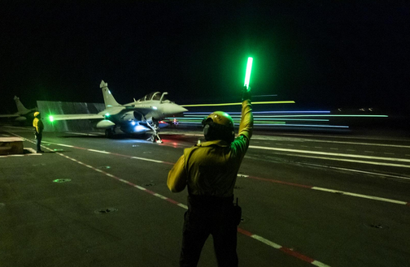

SAE : Situations d'Apprentissage et d'Évaluation
Cette catégorie regroupe les projets de groupe transversaux menés tout au long de l'année, mettant l'accent sur la gestion de projet, la conception technique et le travail en équipe.
Les Projets Réalisés
Projet 1 : Rafale Lumineux
Conception d'un système sonore et lumineux pour un planeur.

Voir les détails →Projet 2 : Thermomètre de Bain
Création d'un thermomètre de bain pour nouveaux-nés.
 Voir les détails →
Voir les détails →
Projet 3 : Kart à Hélice
Développement d'un kart à hélice radiocommandé en intérieur.
 Voir les détails →
Voir les détails →
Compétences Techniques & Méthodologiques
- Conception électronique : Utilisation avancée du logiciel ISIS (Proteus) pour la saisie de schémas et le routage.
- Fabrication : Construction de cartes électroniques, soudure précise au fer et à l'étain.
- Gestion documentaire : Rédaction rigoureuse de documents techniques (DDC - Dossier de Conception, DDV - Dossier de Validation, DDF - Dossier de Fabrication).
- Planification : Suivi de projet et comptes rendus réguliers par mail en respectant un planning strict.